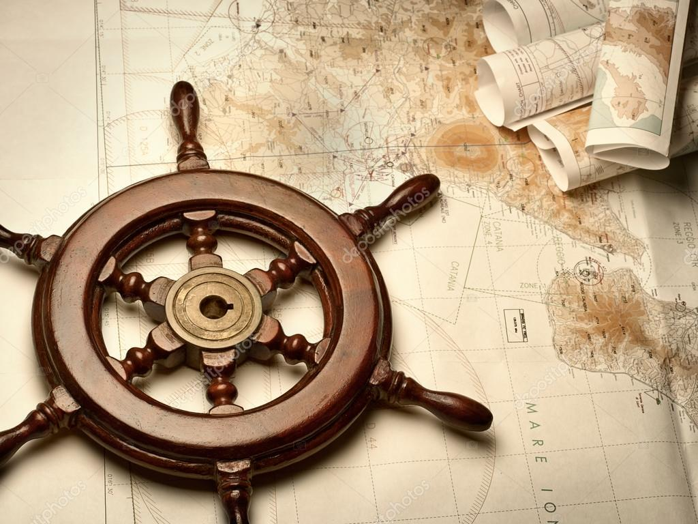

O que é navegação? Pra que serve?
Navegação é a ciência, arte, prática ou tecnologia, de planejar e executar uma viagem de um ponto de partida até seu ponto de destino.
A principal atividade da navegação é a determinação da posição atual, para possível comparação com posições previstas ou desejadas.
A invenção de aparelhos que permitem a determinação exata dessa posição, como a bússola, o sextante, o cronômetro, o radar, o rádio, e o GPS estão entre os maiores avanços científicos da humanidade.
Outro fator crucial na navegação é a existência de mapas ou modelos similares.
Fonte: https://pt.wikipedia.org/wiki/Navegação
Temos um problema!!!
Os marujos perderam o mapa e não sabem aonde fica o tesouro!
Para ajudá-los eles rezaram e pediram aos deuses do Navigation Timizismo que os guiassem.
A solução \o/
Os deuses ouviram as preces e mandaram as coordenadas do tesouro disfarçadas dentro de sua conexão Terra - Mundo Superior
Será que os marujos vão descobrir?